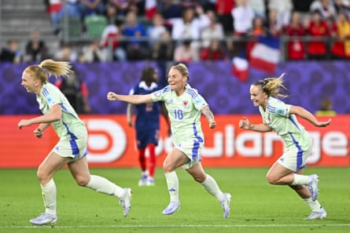

Given that they were playing next door to a branch of Ikea it could be tempting to say Wales collapsed in the manner of badly assembled flat pack furniture. But that would be very wrong.
An admittedly emphatic scoreline that leaves France top of Group D and well on course for the quarter-finals does not tell the whole story of a much improved Welsh performance on a night when Jess Fishlock scored a historic goal.
Granted only highly improbable mathematics dictate that their tournament exit is not quite rubber-stamped but Rhian Wilkinson’s players made Laurent Bonadei’s gifted side work hard for an ultimately convincing win.
Wales drew up at the St Gallen Arena in a new team bus with a fresh driver at the wheel. Wilkinson’s squad were badly shaken when their original coach was involved in a collision with a car en route to a training session here on Tuesday afternoon but her subsequent switch to a back four amid a quartet of personnel changes were driven primarily by tactical considerations.
In contrast Bonadei’s decision to rotate so heavily that the France starting XI contained only four survivors of last Saturday’s statement 2-1 win against England was seemingly driven by a desire to keep his stars well rested.
Having analysed the Netherlands’ opening 3-0 victory against Wales the France coach clearly felt sufficiently confident to rest seven key players including two outstanding forwards in Marie-Antoinette Katoto and Sandy Baltimore.
If that bolstered the morale of a travelling Red Wall comprising almost 2,000 Wales fans, Wilkinson’s players also kicked off well aware that they could not be knocked out of Euro 2025 here. They knew that even defeat to France would not quite seal an early return home; although it leaves them needing to beat England by four goals on Sunday, while hoping France defeat the Netherlands on the same evening.
Jess Fishlock (centre) runs towards the dugout after scoring Wales’ first goal at a major tournament.Photograph: Gian Ehrenzeller/EPA
The rain that soaked St Gallen in recent days, was, mercifully replaced by tepid evening sunshine but, as dusk descended on north -eastern Switzerland, a chill permeated the air.
Wales looked in peril of freezing as France began in menacing mode with Manchester United’s Safia Middleton-Patel, who had replaced Olivia Clark in goal, quickly forced to save from Clara Matéo with her legs.
When, shortly afterwards, Angharad James-Turner failed to clear a corner, the ball fell for Matéo to chest down and volley expertly beyond Middleton-Patel.
Undeterred, Fishlock – who else? – responded by conjuring the moment Wales supporters had waited so long for; their first goal at a major tournament.
Despite being tackled, Ceri Holland somehow managed to dink the ball into Fishlock’s path and Wales’ 38-year-old record goalscorer needed no invitation to direct it into the back of the net.
Although an offside flag paused ecstatic Welsh celebrations they resumed once VAR came to the rescue and it was decided Fishlock’s goal stood after all. The Seattle Reign midfielder, who made her Wales debut almost two decades ago, became the oldest player to score at a women’s European Championship and immediately raced towards a suddenly tearful Wilkinson.
Fishlock’s goal relaxed Wales to the point where they remembered they can actually play a bit and applied so much pressure to Bonadei’s youthful backline that France seriously lost their way for a while.
Indeed they seemed so unnerved by the Welsh counterattacks that Wilkinson’s players found themselves on the receiving end of a series of rather desperate, and hefty, challenges.
Safia Middleton-Patel cannot get near Amel Majri’s third goal for France.Photograph: Denis Balibouse/Reuters
Then Wales went and ruined it all by conceding a needless penalty when Holland lunged in on Matéo. Kadidiatou Diani converted it, somewhat fortuitously after her fancy runup produced the tamest of strikes straight down the middle. Middleton-Patel, diving to her right, got a foot to it she could only divert the ball into her own net.
That setback apart, Wilkinson’s smart decision to play a formation that swiftly morphed into a brave version of 4-4-2 discomfited France for protracted periods.
Significantly only an awful error from Middleton-Patel, who dithered over a clearance, enabled Matéo to tee up Amel Majri to lash home France’s third goal. In mitigation, the goalkeeper is only 20 and, generally, her footwork is superb.
Suddenly, though, her experience was showing and when she misread Diani’s cross Grace Geyoro applied the finishing touch to register France’s fourth goal.